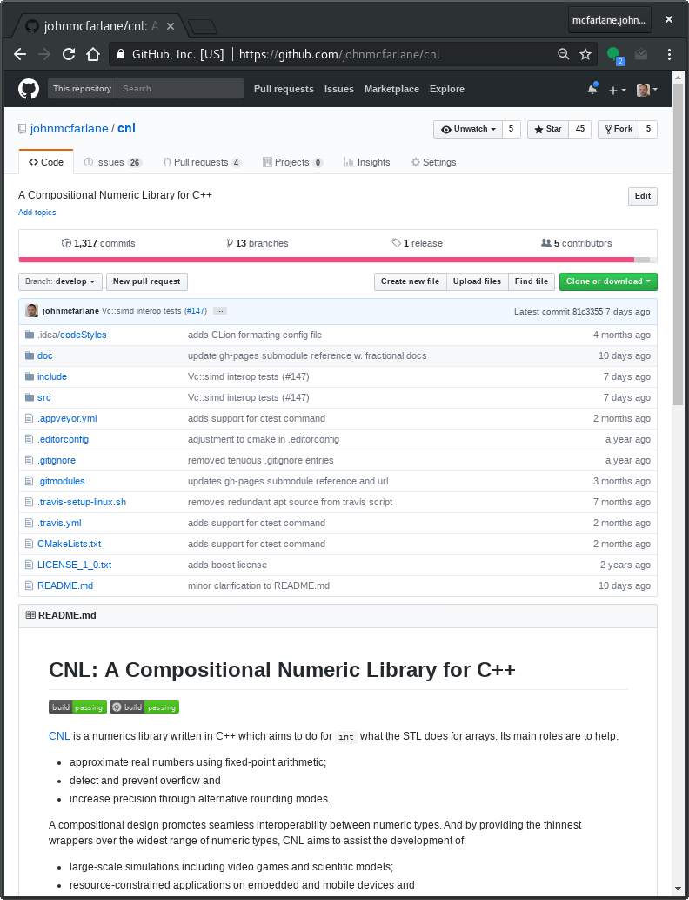

class: center, middle # Better Numeric Types in C++ ## John McFarlane ### ACCU Bay Area - 2018-05-09 --- # Background --  ← [github.com/johnmcfarlane/cnl](https://github.com/johnmcfarlane/cnl) --- # The Problem with Integers -- 1. Fixed resolution -- 2. Limited range -- 3. 'Interesting' arithmetic behavior --- # The Problem with Floating-Point -- 1. Complicated * ± 1.significand * 2 <sup>exponent</sup> * special values, denormalized values, -0 -- 2. Occasional weirdness can surprise: * determinism, associativity, commutativity and ordering -- 3. `<cmath>` functions lack `constexpr` -- 4. Variable resolution -- 5. Costly in energy and silicon --- # Analysis -- * Floating-point problems are not *so* bad. -- * Integers are a powerful abstraction over registers. -- * But we can do a lot better. -- * so ... --- # Goal of CNL "**Do for `int` what the STL did for `[]`.**" -- * Provide zero-cost abstractions over language-level features: ```c++ std::array<T, N> a; // T a[N] std::array<T, N>::iterator i = std::begin(a); // T* i ``` -- * Maintain a familiar interface: ```c++ auto const& third = a[2]; for (auto const& element : a) { /* ... */ } ``` -- * Allow users to opt in to positive-cost functionality: ```c++ std::array<T, N> a; auto const& bad_element = a.at(N); // throws std::out_of_range! ``` -- * And most importantly... --- # Goal of CNL "**Do for `int` what the STL did for `[]`.**" * Compose! ```c++ using fs_cache = unordered_map<filesystem::path, vector<byte>>; ``` --- # Non-Goal "**Don't do for `int` what STL doesn't do for `[]`.**" -- * Don't make the user pay for what they don't use. --- # Fixed-Point Arithmetic -- Definition: ```c++ namespace cnl { template<typename Rep=int, int Exponent=0, int Radix=2> class fixed_point { // ... private: Rep r; }; } ``` -- Example usage: ```c++ #include <cnl/fixed_point.h> void f() { auto n = cnl::fixed_point<int, -8>{ 0.25 }; std::cout << n * 5; // prints "1.25" } ``` --- # The Good -- ```c++ // what the programmer writes bool foo(float f) { auto fixed = fixed_point<int, -16>{f}; auto fixed_plus_one = fixed + 1; return fixed_plus_one > fixed; } ``` -- ```c++ // what the compiler sees bool foo(float) { return true; } ``` -- <iframe width="100%" height="200px" src="https://godbolt.org/embed-ro#g:!((g:!((g:!((h:codeEditor,i:(j:1,source:'%23include+%3Chttps://gist.githubusercontent.com/johnmcfarlane/83c775ebac70217e3ccde408fee10556/raw/aeafd7b27ba5e2ff6bdfed68a2c59fecf5b99c80/cnl_complete.h%3E%0Ausing+cnl::fixed_point%3B%0A%0Abool+foo(float+f)+%7B%0A++++auto+fixed+%3D+fixed_point%3Cint,+-16%3E%7Bf%7D%3B%0A++++auto+fixed_plus_one+%3D+fixed+%2B+1%3B%0A++++return+fixed_plus_one+%3E+fixed%3B%0A%7D'),l:'5',n:'0',o:'C%2B%2B+source+%231',t:'0')),k:50,l:'4',m:99.99999999999999,n:'0',o:'',s:0,t:'0'),(g:!((h:compiler,i:(compiler:g481,filters:(___0:(),b:'0',binary:'1',commentOnly:'0',demangle:'0',directives:'0',execute:'1',intel:'0',jquery:'3.2.1',length:1,prevObject:(___0:(),length:1,prevObject:(___0:(jQuery321067871834031518191:(display:'')),length:1)),trim:'0',undefined:'1'),libs:!(),options:'-std%3Dc%2B%2B11+-O3',source:1),l:'5',n:'0',o:'x86-64+gcc+4.8.1+(Editor+%231,+Compiler+%231)',t:'0')),header:(),k:50,l:'4',n:'0',o:'',s:0,t:'0')),l:'2',n:'0',o:'',t:'0')),version:4"></iframe> --- # The Good <iframe width="100%" height="450px" src="https://godbolt.org/e#g:!((g:!((g:!((h:codeEditor,i:(fontScale:0.7464959999999999,j:1,lang:c%2B%2B,source:'%23include+%3Chttps://gist.githubusercontent.com/johnmcfarlane/83c775ebac70217e3ccde408fee10556/raw/aeafd7b27ba5e2ff6bdfed68a2c59fecf5b99c80/cnl_complete.h%3E%0A%23include+%3Ciostream%3E%0A%0Ausing+cnl::fixed_point%3B%0A%0Avoid+f(float+a)+%7B%0A++++auto+n+%3D+fixed_point%3Cint,+-8%3E%7B+a+%7D%3B%0A++++std::cout+%3C%3C+float(n+*+5)%3B+//+prints+%221.25%22%0A%7D%0A%0Avoid+i(float+a)+%7B%0A++++int+n+%3D+a+*+256.f%3B%0A++++std::cout+%3C%3C+(n+*+5)+/+256.f%3B+//+prints+%221.25%22%0A%7D'),l:'5',n:'0',o:'C%2B%2B+source+%231',t:'0')),k:50,l:'4',m:99.99999999999999,n:'0',o:'',s:0,t:'0'),(g:!((h:compiler,i:(compiler:g481,filters:(___0:(),b:'0',binary:'1',commentOnly:'0',demangle:'0',directives:'0',execute:'1',intel:'0',jquery:'3.2.1',length:1,prevObject:(___0:(),length:1,prevObject:(___0:(jQuery321067871834031518191:(display:'')),length:1)),trim:'0',undefined:'1'),fontScale:0.7464959999999999,lang:c%2B%2B,libs:!(),options:'-std%3Dc%2B%2B11+-O3',source:1),l:'5',n:'0',o:'x86-64+gcc+4.8.1+(Editor+%231,+Compiler+%231)+C%2B%2B',t:'0')),header:(),k:50,l:'4',n:'0',o:'',s:0,t:'0')),l:'2',n:'0',o:'',t:'0')),version:4"></iframe> --- # The Bad -- ```c++ // range exceeded! (undefined behavior) auto a = numeric_limits<int>::max() + 1; ``` -- ```c++ // also undefined behavior auto b = numeric_limits<fixed_point<int, -16>>::max() + 1; ``` -- ```c++ // compiles static_assert(1 == 1, "this does compile"); // error: static assertion failed: this does not compile static_assert(1 != 1, "this does not compile"); // error: left shift count >= width of type static_assert(1 << 1000, "this does not compile"); ``` -- ```c++ // compiles static_assert(numeric_limits<fixed_point<int, -16>>::max() - 1, "this compiles"); // fatal error: static_assert expression is not an integral constant expression static_assert(numeric_limits<fixed_point<int, -16>>::max() + 1, "this does not!"); ``` --- # The Bad ```c++ // compiles static_assert(unsigned{1} < signed{-1}, "wat?"); ``` -- ```c++ // compiles static_assert(fixed_point<unsigned>{1} < fixed_point<signed>{-1}, "huh?"); ``` -- ```c++ // compiles (C++17) static_assert(fixed_point{1U} < fixed_point{-1}); ``` --- # The Ugly -- ```c++ // multiplication auto n = cnl::fixed_point<int, -8>{1.5}; auto nn = n * n; // type? ``` -- ```c++ // (-8) + (-8) = -16 static_assert(std::is_same_v<decltype(nn), cnl::fixed_point<int, -16>>); ``` --- # The Ugly <iframe width="100%" height="460px" src="https://godbolt.org/embed-ro#g:!((g:!((g:!((h:codeEditor,i:(fontScale:0.7464959999999999,j:1,source:'%23include+%3Chttps://gist.githubusercontent.com/johnmcfarlane/83c775ebac70217e3ccde408fee10556/raw/aeafd7b27ba5e2ff6bdfed68a2c59fecf5b99c80/cnl_complete.h%3E%0A%0Ausing+cnl::fixed_point%3B%0A%0Afloat+square(float+f)+%7B%0A++++auto+n+%3D+fixed_point%3Cint,+-8%3E%7Bf%7D%3B%0A++++auto+nn+%3D+n+*+n%3B++++//+fixed_point%3Cint,+-16%3E%3B%0A++++return+float(nn)%3B%0A%7D%0A%0Afloat+the_old_way(float+f)+%7B%0A++++auto+n+%3D+static_cast%3Cint%3E(f+*+256.f)%3B%0A++++auto+nn+%3D+n+*+n%3B%0A++++return+nn+/+65536.f%3B%0A%7D'),l:'5',n:'0',o:'C%2B%2B+source+%231',t:'0')),header:(),k:43.96866840731071,l:'4',n:'0',o:'',s:0,t:'0'),(g:!((h:compiler,i:(compiler:clang500,filters:(b:'0',binary:'1',commentOnly:'0',demangle:'0',directives:'0',execute:'1',intel:'0',trim:'0'),fontScale:0.7464959999999999,libs:!(),options:'-std%3Dc%2B%2B17+-O2',source:1),l:'5',n:'0',o:'x86-64+clang+5.0.0+(Editor+%231,+Compiler+%231)',t:'0')),k:56.03133159268929,l:'4',m:99.99999999999999,n:'0',o:'',s:0,t:'0')),l:'2',n:'0',o:'',t:'0')),version:4"></iframe> --- # The Ugly ```c++ constexpr auto n = cnl::fixed_point<int, -8>{1.5}; constexpr auto d = cnl::fixed_point<int, -8>{2.25}; ``` -- ```c++ // (-8) - (-8) = 0 constexpr auto q = n / d; // cnl::fixed_point<int, 0>; ``` -- ```c++ constexpr auto r = n % d; // cnl::fixed_point<int, -8>; ``` -- ```c++ // (-8) - (23) constexpr auto q = cnl::divide(n, d); // cnl::fixed_point<long, -31>; ``` --- # How Do You Solve a Problem Like Division? -- ```c++ 5.5 * 5.5 = 30.25 55. * .55 = 30.25 5.5 * 55. = 302.5 ``` -- ```c++ AAA.BBBBB * CCCCCC.DD = AAACCCCCC.BBBBBDD ``` -- ```c++ 10 / 100 = 00.01 1 / 1000 = 0.001 ``` -- ```c++ AAA.BBBBB / CCCCCC.DD = AAADD.BBBBBCCCCCC ``` -- ```c++ 1 / 3 = 1.333333333... ``` --- # How Do You Solve a Problem Like Division? -- ```c++ template<typename Numerator, typename Denominator> struct fractional { Numerator numerator; Denominator denominator; };``` -- ```c++ constexpr auto n = fixed_point<int16_t, -8>{1.5}; constexpr auto d = fixed_point<int16_t, -8>{2.25}; constexpr auto f = fractional{n, d}; constexpr auto q = fixed_point{f}; // fixed_point<int32_t, -15>{.66666667} ``` --- # Elasticity -- ```c++ auto n = fixed_point<uint8_t, -8>{0.99609375}; auto nn = n * n; ``` --- # Elasticity ```c++ auto n = fixed_point<uint8_t, -8>{0.99609375}; auto nn = n * n; // fixed_point<int, -16>{0.9922027587890625}; ``` -- ```c++ auto n = fixed_point<int, -31>{0.99609375}; auto nn = n * n; // fixed_point<int, -62>{?!?!?!?!?!?!}; ``` --- # Elasticity ```c++ template<int Digits, class Narrowest = int> class elastic_integer { WideEnoughInteger r; /* other stuff */ }; ``` -- ```c++ #include <cnl/elastic_integer.h> using cnl::elastic_integer; auto e = elastic_integer<31>{0x7FFFFFFF}; // r has 31 or more digits ``` -- ```c++ auto ee = e * e; // elastic_integer<62>{INT64_C(0x3FFFFFFF00000001)} ``` -- ```c++ auto _2ee = ee + ee; // elastic_integer<63>{INT64_C(0x7FFFFFFE00000002)} ``` -- ```c++ auto fpe = fixed_point<elastic_integer<31>, -31>{0.99609375}; ``` -- ```c++ auto sq = fpe * fpe; // fixed_point<elastic_integer<62>, -62>{0.9922027587890625} ``` -- ```c++ auto q = fixed_point{fractional{sq, sq}}; // fixed_point<elastic_integer<124>, -62>{1} ``` --- # Run-time Safety -- ```c++ #include <cnl/safe_integer.h> using cnl::safe_integer; auto i = safe_integer<uint8_t>{255}; ``` -- ```c++ auto j = i + 1; ``` --- # Run-time Safety ```c++ #include <cnl/safe_integer.h> using cnl::safe_integer; auto i = safe_integer<uint8_t>{255}; ``` ```c++ auto j = i + 1; // safe_integer<int>{256} ``` -- ```c++ safe_integer<uint8_t> k = i + 1; // throw std::overflow_error ``` -- ```c++ constexpr safe_integer<uint8_t> k = i + 1; static_assert(cnl::_impl::identical(safe_integer<int>{256}, k)); ``` ``` [ 29%] Building CXX object src/test/CMakeFiles/fp_test.dir/cppcon2017.cpp.o /home/john/cnl/src/test/cppcon2017.cpp:151:37: fatal error: constexpr variable 'k' must be initialized by a constant expression constexpr safe_integer<uint8_t> k = i + 1; ^~~~~~~~~ /home/john/cnl/include/cnl/overflow.h:52:40: note: subexpression not valid in a constant expression return condition ? value : throw std::overflow_error(""); ^ ``` and so on... --- # Deduction and UDLs -- ```c++ auto x = fixed_point{42UL}; // fixed_point<unsigned long, 0>{42} ``` -- ```c++ auto y = fixed_point{128}; // fixed_point<int, 0>{128} ``` -- ```c++ using cnl::literals; auto z = fixed_point{128_c}; // fixed_point<int, 7>{128} ``` -- ```c++ auto a = fixed_point{0b10000000000000000000000000000000000000000_c}; // a === fixed_point<int, 40>{0b10000000000000000000000000000000000000000L} ``` -- ```c++ auto b = fixed_point{0b11111111111111111111111111111111111111111_c}; // b === fixed_point<long, 0>{0b11111111111111111111111111111111111111111L} ``` --- # Deduction and UDLs -- ```c++ auto c = elastic_integer{2018_c}; // elastic_integer<11>{2018} ``` -- ```c++ auto e = 0x7f000_elastic; // fixed_point<elastic_integer<7>, 12>{0x7f000} ``` -- ```c++ auto s = e >> 1_c; // fixed_point<elastic_integer<7>, 11>{0x3f800} ``` --- # Interoperability - Boost.Multiprecision ```c++ #include <cnl/auxiliary/boost.multiprecision.h> using namespace boost::multiprecision; template<int NumBits, int Exponent = 0> using mp_fixed_point = cnl::fixed_point< number<cpp_int_backend<NumBits, NumBits, signed_magnitude, unchecked, void>>, Exponent>; ``` -- Fixed-Point + Boost.Multiprecision: -- * googol (10<sup>100</sup>) ✓ -- * googolth (1 / googol) ✓ -- * googolplex (10<sup>googol</sup>) ✗ --- # Interoperability - Boost.SIMD ```c++ #include <cnl/auxiliary/boost.simd.h> using boost::simd::pack; template<class T, std::size_t N, int Exponent> using fixed_point_pack = fixed_point<pack<T, N>, Exponent>; ``` -- ```c++ using fpp = fixed_point_pack<int, 4, -16>; using initializer = initializer<fpp>; auto expected = fpp{initializer{7.9375+-1, -8.+.125, 0+-5, 3.5+-3.5}}; auto augend = fpp{initializer{7.9375, -8., 0, 3.5}}; auto addend = fpp{initializer{-1, .125, -5, -3.5}}; auto sum = augend + addend; ``` --- # Interoperability - Boost.SIMD ``` !!!!!!!!!!!!!!!!!!!!!!! !!!!!!!!!!!!!!!!!!!!!!!!!!!!!!!!! !!!!!!!!!!!!!!!!!!!!!!!!!!!!!!!!!!!!!!! !!!!!!!!!!!!!!!!!!!!!!!!!!!!!!!!!!!!!!!!!!! !!!!!!""""""""""""""""""""!!!!!!!!!!!!!!!!!!!!! !!!!""""""""""""####$$&(%%###"""!!!!!!!!!!!!!!!!!!! !!""""""""""""#####$$%'*a2'%$###""""!!!!!!!!!!!!!!!!! !"""""""""""#####$%&&&(* .'&%%%$#""""!!!!!!!!!!!!!!!! !"""""""""##$$$$%%&) 7$#""""!!!!!!!!!!!!!!!! !"""""##$%*&&&&&&&(. ('##""""!!!!!!!!!!!!!!!! "#####$$$&(3 G+ 8%$#"""""!!!!!!!!!!!!!!! #$#%%%&'*22 &$$##""""!!!!!!!!!!!!!!! #$#%%%&'*22 &$$##""""!!!!!!!!!!!!!!! "#####$$$&(3 G+ 8%$#"""""!!!!!!!!!!!!!!! !"""""##$%*&&&&&&&(. ('##""""!!!!!!!!!!!!!!!! !"""""""""##$$$$%%&) 7$#""""!!!!!!!!!!!!!!!! !"""""""""""#####$%&&&(* .'&%%%$#""""!!!!!!!!!!!!!!!! !!""""""""""""#####$$%'*a2'%$###""""!!!!!!!!!!!!!!!!! !!!!""""""""""""####$$&(%%###"""!!!!!!!!!!!!!!!!!!! !!!!!!!""""""""""""""""""""!!!!!!!!!!!!!!!!!!!!!! !!!!!!!!!!!!!!!!!!!!!!!!!!!!!!!!!!!!!!!!!!! !!!!!!!!!!!!!!!!!!!!!!!!!!!!!!!!!!!!!!! !!!!!!!!!!!!!!!!!!!!!!!!!!!!!!!!! !!!!!!!!!!!!!!!!!!!!!!! ``` --- # CNL Today and Tomorrow -- * Arbitrary width -- * Full Support for Rounding and Overflow ```c++ template<class Rep = int, class RoundingTag = closest_rounding_tag> class precise_integer; ``` -- * Full complement of operators for `safe_integer` and `precise_integer` -- * Full complement of free functions ```c++ add(saturated_overflow, UINT32_C(0xFFFFFFFF), UINT32_C(0x12345678)) divide(closest_rounding_tag, 2, 3); ``` -- * Better Literals ```c++ auto a = 0b1111.1111_elastic; // fixed_point<elastic_integer<8>, -4> ``` --- # Thank You! Now go to GitHub and try it out! [`github.com/johnmcfarlane/cnl`](https://github.com/johnmcfarlane/cnl) ```sh git clone https://github.com/johnmcfarlane/cnl.git ``` --- # Bonus Slides - Beyond Exponents `std::ratio` scales things statically: ```c++ template<int Num, int Denom = 1> class ratio; ``` -- What if `Exponent` was replaced with a type parameter? ```c++ // equivalent to fixed_point<int, -8, 2> using a = fixed_point<int, ratio<1, 256>>; ``` -- This should be possible: simply separate `fixed_point`'s two concerns: ```c++ // a type which stores an integer and scales it template<typename Rep, typename Scale> class scaled_integer; // a type which scales integers template<int Exponent, int Radix> class power; ``` --- # Bonus Slides - Beyond Exponents Now `fixed_point` is just one of many `scaled_integer` types. ```c++ template<typename Rep, int Exponent, int Radix> using fixed_point = scaled_integer<Rep, power<Exponent, Radix>> // (Decimal fixed-point is already on the to-do list.) template<typename Rep, int Exponent> using decimal_fixed_point = scaled_integer<Rep, power<Exponent, 10>> ``` -- And a souped-up `std::ratio` is another way to scale integers. ```c++ template<typename Rep, int Power> using dollar = scaled_integer<Rep, ratio<1, 100>>; template<typename Rep, int Power> using angle = scaled_integer<Rep, ratio<1, 360>>; // units in the range [0, 1] template<typename Rep> using unit = scaled_integer<Rep, ratio<1, std::numeric_limits<Rep>::max()>>; ``` --- # Bonus Slides - Beyond Exponents And scaling of integers is just the beginning... -- ```c++ // type-safety prevents units from being confused struct length_tag {}; struct time_tag {}; // individual quantities template<typename BaseTag, int Power> struct base_quantity; // is quantity a scale, like exponent or std::ratio? template<typename ... BaseQuantities> struct quantity; using time = quantity<base_quantity<time_tag, 1>>; using length = quantity<base_quantity<length_tag, 1>>; template<typename ... BaseQuantitiesA, typename ... BaseQuantitiesB> auto operator/(quantity<BaseQuantitiesA...>, quantity<BaseQuantitiesB...>) // quantity<base_quantity<length_tag, 1>, base_quantity<time_tag, -1>> auto speed = length{} / time{}; ``` Disclaimer: none of this compiles ... yet! --- class: middle, center # Thank You! - @JSAMcFarlane <br/><br/><br/><br/> Now go to GitHub and try it out! ```sh git clone https://github.com/johnmcfarlane/cnl.git ```